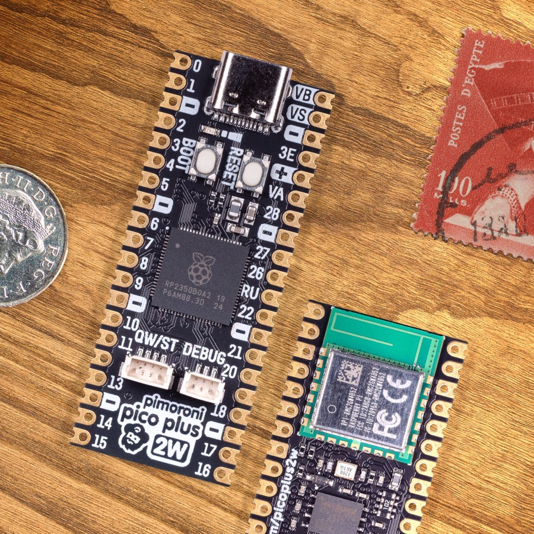

Pimoroni Pico Plus 2 W
The Pimoroni Pico Plus 2 W is a Raspberry Pi Pico form-factor board built around the RP2350B – the 80-pin variant of the RP2350 with 48 GPIOs. It adds 16MB of flash, 8MB of PSRAM, a USB-C connector, a Qw/ST (Qwiic/STEMMA QT) connector, and an Infineon CYW43439 for 2.4GHz WiFi and Bluetooth. The radio is carried on a Raspberry Pi RM2 module, which is where the CYW43439 lives.

Pimoroni Pico Plus 2 W, front and back (photo: Pimoroni)
Features
RP2350B microcontroller chip (QFN-80 package)
Dual-core ARM Cortex-M33 processor at up to 150MHz, with FPU and DSP
Also contains two Hazard3 RISC-V cores, selectable instead of the M33 pair
520kB of on-chip SRAM
16MB of on-board QSPI flash
8MB of on-board QSPI PSRAM (chip select on GPIO 47)
48 multi-function GPIO pins, 30 of them on the castellated headers
4x UART, 2x SPI, 2x I2C, 8x 12-bit ADC, 24x PWM channels
12x Programmable IO (PIO) state machines across 3 PIO blocks
USB-C, supporting device and host
Infineon CYW43439 for 2.4GHz WiFi 4 (802.11n) and Bluetooth 5.2
Qw/ST connector on I2C0
BOOT and RESET buttons; BOOT is also readable at runtime on GPIO 45
Battery connector with charging, and VSYS monitoring on GPIO 43
Serial Console
By default the serial console is UART0 on GPIO 0 (TX, pin 1) and GPIO 1 (RX, pin 2), at 115200-8N1.
The board can instead be configured to put the console on the USB-C connector
(the usbnsh configuration). Note that the RP2350 USB device support is
still marked experimental in NuttX and the CDC/ACM console is known to corrupt
data and stop responding after a handful of commands. Prefer the UART console
for anything that matters.
Wireless Communication
The on-board Infineon CYW43439 is reached over a half-duplex gSPI bus driven by
a PIO state machine, implemented in arch/arm/src/rp23xx/rp23xx_cyw43439.c.
It presents itself as the wlan0 network device and supports 2.4GHz WiFi 4
(802.11n) in station mode. Bluetooth is not supported.
The chip’s firmware is not downloaded until wlan0 is brought up, so nothing
on the wireless chip – including the LED, see below – responds before that.
CYW43439 firmware
The driver links the wireless chip’s firmware and CLM blob into the NuttX
binary, so a copy has to be available at build time. CONFIG_CYW43439_FIRMWARE_BIN_PATH
points at it and defaults to:
${PICO_SDK_PATH}/lib/cyw43-driver/firmware/43439A0-7.95.49.00.combined
This is the WiFi firmware padded up to a 256-byte boundary with the CLM blob
appended, and CONFIG_CYW43439_FIRMWARE_LEN is the unpadded length of just
the firmware part (224190 bytes for this release).
pico-sdk 2.x no longer ships that file as a binary – it only carries the same
bytes as a C array in lib/cyw43-driver/firmware/w43439A0_7_95_49_00_combined.h.
If that is all you have, convert the array back to a binary, for example:
$ python3 -c '
import re, sys
text = open(sys.argv[1]).read()
body = text.split("{", 1)[1].split("};", 1)[0]
data = bytes(int(b, 16) for b in re.findall(r"0x([0-9a-fA-F]{2})", body))
open(sys.argv[2], "wb").write(data)
' ${PICO_SDK_PATH}/lib/cyw43-driver/firmware/w43439A0_7_95_49_00_combined.h \
${PICO_SDK_PATH}/lib/cyw43-driver/firmware/43439A0-7.95.49.00.combined
The header’s own CYW43_WIFI_FW_LEN and CYW43_CLM_LEN macros tell you the
lengths to expect: 224190 + 984, in a 225240-byte file.
If the file is missing the build still succeeds, but a placeholder is linked in and the wireless chip will not come up.
User LED
The board’s only LED is wired to GPIO 0 of the CYW43439, not to a pin of the RP2350. Setting it therefore means an iovar request over the gSPI bus, which has two consequences:
The LED does not respond until
wlan0has been brought up, because that is when the wireless chip’s firmware is downloaded. Before that, every write fails with-EIO.Driving the LED blocks, so it cannot be done from interrupt context. That rules out
CONFIG_ARCH_LEDS, whoseboard_autoled_on()is called from interrupt handlers and from assertion handling. This board therefore supportsCONFIG_USERLEDonly, and a build withCONFIG_ARCH_LEDSenabled is rejected with an explicit error.
With CONFIG_USERLED the LED appears as /dev/userleds and can be driven
with the leds example. Board code can also reach it, and the CYW43439’s
other two GPIOs, through include/rp23xx_extra_gpio.h:
GPIO |
Direction |
Function |
|---|---|---|
0 |
output |
On-board LED |
1 |
output |
Voltage regulator mode: 1 selects PWM (less ripple) over PFM |
2 |
input |
Non-zero if power is coming from USB or the VBUS pin |
Pin Mapping
The castellated headers follow the Raspberry Pi Pico pinout, with the RP2350B’s extra GPIOs brought out on the two rows of pads inside the headers.
Pin |
Signal |
Notes |
|---|---|---|
1 |
GPIO0 |
Default TX for UART0 serial console |
2 |
GPIO1 |
Default RX for UART0 serial console |
3 |
Ground |
|
4 |
GPIO2 |
|
5 |
GPIO3 |
|
6 |
GPIO4 |
Default SDA for I2C0, also on the Qw/ST connector |
7 |
GPIO5 |
Default SCL for I2C0, also on the Qw/ST connector |
8 |
Ground |
|
9 |
GPIO6 |
|
10 |
GPIO7 |
|
11 |
GPIO8 |
|
12 |
GPIO9 |
|
13 |
Ground |
|
14 |
GPIO10 |
|
15 |
GPIO11 |
|
16 |
GPIO12 |
|
17 |
GPIO13 |
|
18 |
Ground |
|
19 |
GPIO14 |
|
20 |
GPIO15 |
|
21 |
GPIO16 |
Default RX for SPI0 |
22 |
GPIO17 |
Default CSn for SPI0 |
23 |
Ground |
|
24 |
GPIO18 |
Default SCK for SPI0 |
25 |
GPIO19 |
Default TX for SPI0 |
26 |
GPIO20 |
|
27 |
GPIO21 |
|
28 |
Ground |
|
29 |
GPIO22 |
|
30 |
Run |
|
31 |
GPIO26 |
ADC0 |
32 |
GPIO27 |
ADC1 |
33 |
AGND |
Analog ground |
34 |
GPIO28 |
ADC2 |
35 |
ADC_VREF |
Analog reference voltage |
36 |
3V3 |
Power output to peripherals |
37 |
3V3_EN |
Pull to ground to turn off |
38 |
Ground |
|
39 |
VSYS |
+5V supply to the board |
40 |
VBUS |
Connected to USB +5V |
Other RP2350B Pins
GPIO |
Function |
|---|---|
23 |
Output - CYW43439 power enable (WL_REG_ON) |
24 |
I/O - CYW43439 gSPI data line, doubles as its interrupt request |
25 |
Output - CYW43439 chip select |
29 |
Output - CYW43439 gSPI clock |
43 |
Input - VSYS monitoring, via ADC |
45 |
Input - BOOT button, active low, readable as a user button |
47 |
Output - PSRAM chip select |
Note that GPIO 23, 24, 25 and 29 are the same pins the Raspberry Pi Pico W uses for its CYW43439, so the wireless wiring is identical despite the larger package. Do not use them for anything else.
Installation & Build
For instructions on how to install the build dependencies and create a NuttX image for this board, consult the main RP23XX documentation.
Configurations
All configurations listed below can be configured using the following command
in the nuttx directory (again, consult the main
RP23XX documentation):
$ ./tools/configure.sh pimoroni-pico-plus-2-w:<configname>
nsh
Basic NuttShell configuration, console on UART0 at 115200 bps. The wireless chip is not enabled, so this configuration has no network and no LED.
usbnsh
Basic NuttShell configuration with the console on USB CDC/ACM at 115200 bps. See the caveat under Serial Console.
wifi
NuttShell configuration with the console on UART0 at 115200 bps and the
CYW43439 enabled: wlan0 in station mode, WAPI, DHCP client, DNS client and
ping. /dev/userleds and /dev/buttons are registered too.
After loading this configuration, set the country code to match your region in , and set your network’s credentials in .
Alternatively, leave the built-in credentials alone and associate at runtime:
nsh> wapi mode wlan0 2
nsh> wapi psk wlan0 "my-passphrase" 3 2
nsh> wapi essid wlan0 my-ssid 1
nsh> renew wlan0
nsh> ifconfig
lo Link encap:Local Loopback at RUNNING mtu 1518
inet addr:127.0.0.1 DRaddr:127.0.0.1 Mask:255.0.0.0
wlan0 Link encap:Ethernet HWaddr 28:cd:c1:ff:d3:be at RUNNING mtu 576
inet addr:192.168.0.118 DRaddr:192.168.0.1 Mask:255.255.255.0
nsh> ping -c 3 8.8.8.8
PING 8.8.8.8 56 bytes of data
56 bytes from 8.8.8.8: icmp_seq=0 time=20.0 ms
56 bytes from 8.8.8.8: icmp_seq=1 time=10.0 ms
56 bytes from 8.8.8.8: icmp_seq=2 time=10.0 ms
3 packets transmitted, 3 received, 0% packet loss, time 3030 ms
rtt min/avg/max/mdev = 10.000/13.333/20.000/4.714 ms
The 3 and 2 arguments to wapi psk select WPA_ALG_CCMP and WPA_VER_2;
run wapi help for the other values. wapi scan wlan0 lists the visible
access points.